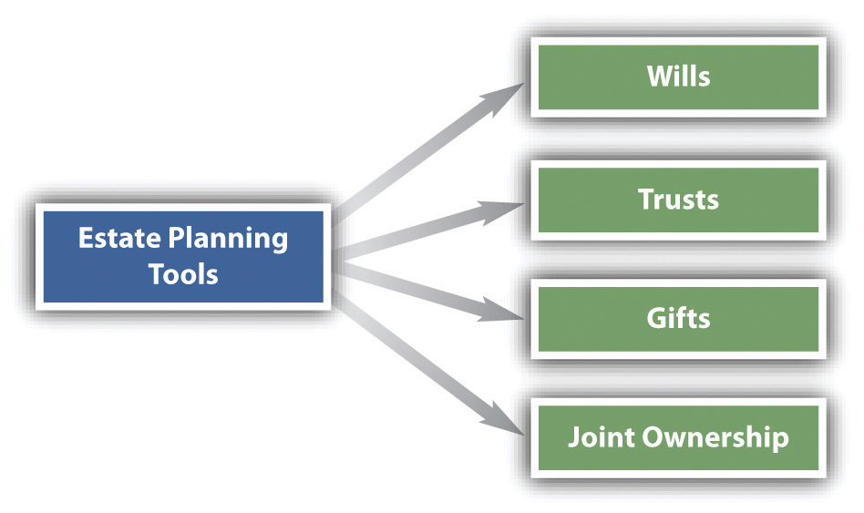

After reading this chapter, you should understand the following:
Broadly defined, estate planningThe process by which an owner over the course of his life decides how his assets are to be passed on to others at his death. is the process by which someone decides how his assets are to be passed on to others at his death. Estate planning has two general objectives: to ensure that the assets are transferred according to the owner’s wishes and to minimize state and federal taxes.
People have at their disposal four basic estate planning tools: (1) wills, (2) trusts, (3) gifts, and (4) joint ownership (see Figure 36.1 "Estate Planning"). The rules governing gifts are discussed in Chapter 31 "Introduction to Property: Personal Property and Fixtures", and joint ownership is treated in Chapter 33 "The Nature and Regulation of Real Estate and the Environment". Consequently, we focus on the first two tools here. In addition to these tools, certain assets, such as insurance (discussed in Chapter 37 "Insurance"), are useful in estate planning.
Figure 36.1 Estate Planning
Estate planning not only provides for the spouses and children, other relatives and friends, the children’s education, payoff of the mortgage, and so on, but also serves as the principal means by which liquidity can be guaranteed for taxes, expenses for administering the estate, and the like, while preserving the assets of the estate. And whenever a business is formed, estate planning consequences should always be considered, because the form and structure of the business can have important tax ramifications for the individual owners.